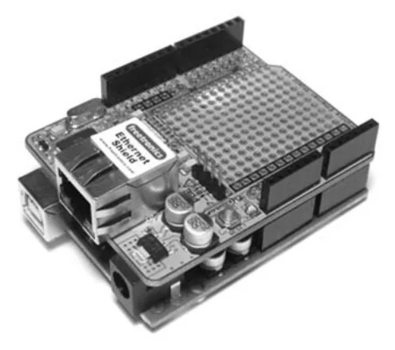
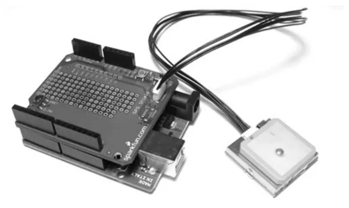
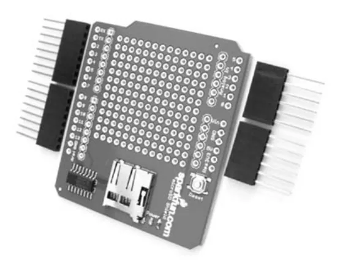
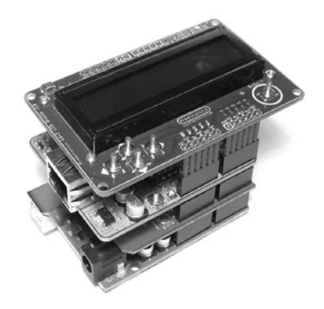

You can add functionality to your Arduino board by attaching shields. A shield is a circuit board that connects via pins to the sockets on the sides of an Arduino. Hundreds of shields are available on the market. One popular project, for example, combines a GPS shield with a microSD memory card shield to create a device that logs and stores position over time, such as a car’s path of travel or the location of a new hiking trail. Other projects include Ethernet network adapters that let the Arduino access the Internet (Figure 8-1).

GPS satellite receivers let you track the location of the Arduino (Figure 8-2). MicroSD memory card interfaces let the Arduino store data on a memory card (Figure 8-3).
Arduino shields are designed to be stacked, and they usually work in combination with other shields. For example, Figure 8-4 shows a stack that includes an Arduino Uno, a microSD memory card shield to which data can be recorded, an Ethernet shield for connecting to the Internet, and an LCD shield to display information.


